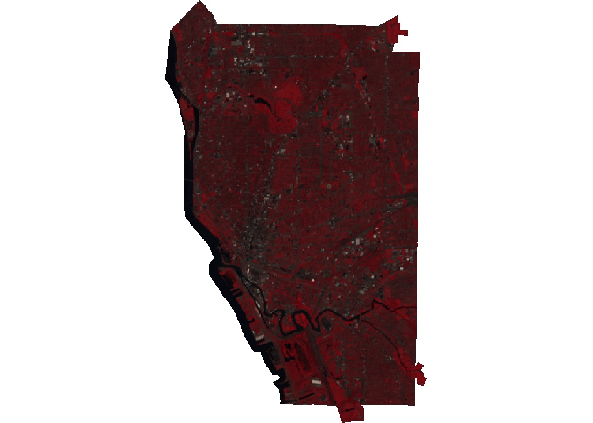
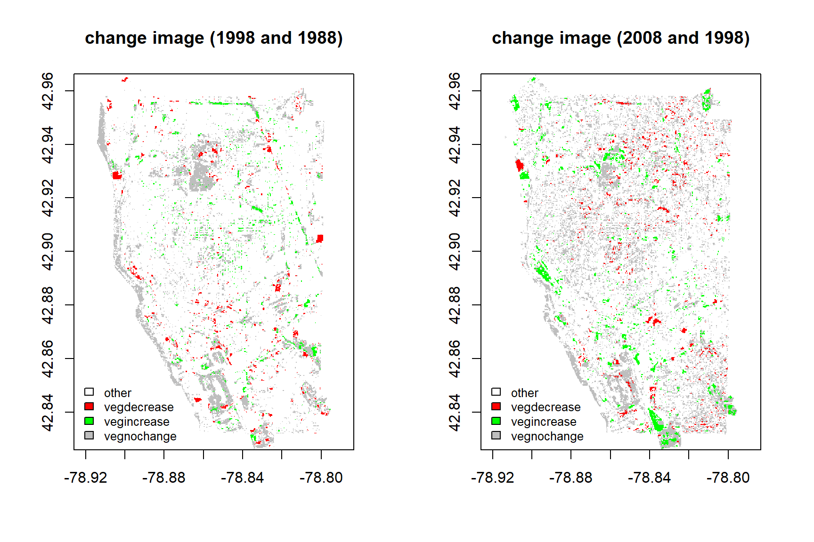
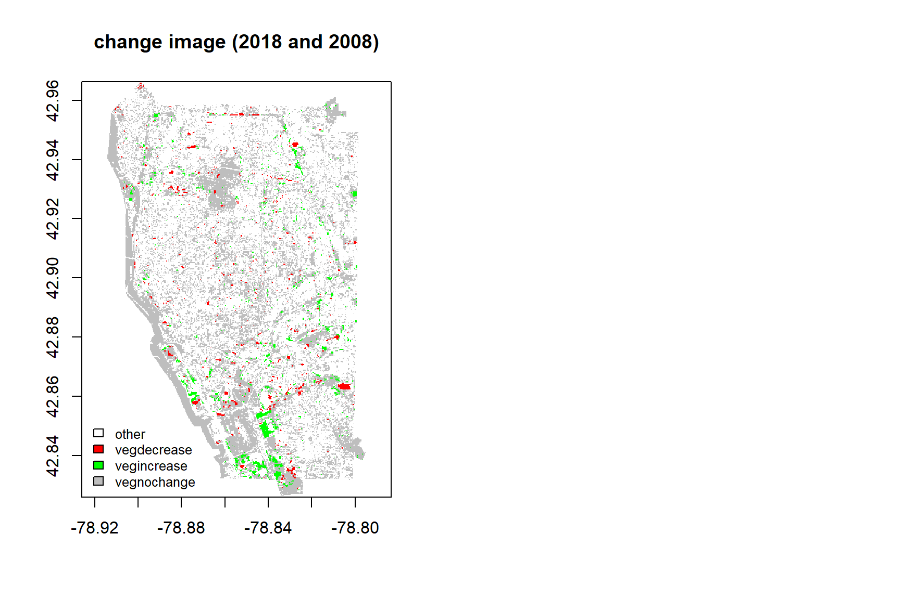

Knowing change of vegetation plays a significant role in city management and environment issue. Image classification combining with remote sensing satellite data provides an promosing way to display mapping of vegetation change. However, assigning one class in one pixel which has 30 meter sptial resolution always accompany with some classification mistake, citing the reason that one pixel always mixed with different classes. In this project, I intend to use multiple endmember spectral mixture analysis to acquire proportion of each class for per-pixel level. Moreover, to understand change of vegetation, supervised classification method will be used in unmixing image to get the trend of vegetation change.
Since vegetation change is focus on change between 30 years, Landsat 8 OLI and Landsat 5 August images will be used in this project to collecting enough pure pixels of each class and finding training samples of vegetation increase, vegetation decrease and vegetation no change class.There are three main steps in this project:
The pure pixel of vegetation, urban area, soil and water was collected in 1988, 1998, 2008 and 2018 using ROI method in ENVI. The location of each sample were recorded and export as .shp file. The mean value of each extract satellite value of each class is considered as the spectrum of pure pixel.
Acquiring fraction of each class within one-pixel level after performing multiple endmemer spectral mixture analysis, the change images between 1988 and 1998, 1998 and 2008, 2008 and 2018 were acquired using subtraction method. Therefore, each pixel contains change information about vegetation, urban, soil and water.
ROI method in ENVI in each change year was used in collection change pixel about vegetation increase, vegetation decrease, vegetation no change and other change. Change points of vegetation increase, vegetation decrease, vegetation no change are collected about each 300 points, the number of point of other change points are 150 points. I use 70% samples to train maximum likelihood classification model, and 30% samples to test classification method.
The packages used in this project are listed below:
library(googledrive)
library(raster)
library(rgdal)
library(sf)
library(foreach)
library(doParallel)
library(tidyverse)
library(RStoolbox)The post image is Landsat8OLI image I used in 2018.

After extract pure pixel satellite value, the value of endmember of each class were averaged as the value of each pure class.
extract_water_2018=raster::extract(img2018,img2018_water)
extract_veg_2018=raster::extract(img2018,img2018_veg)
extract_urban_2018=raster::extract(img2018,img2018_urban)
extract_soil_2018=raster::extract(img2018,img2018_soil)
water_2018<-colMeans(foreach(i=1:NROW(extract_water_2018),.combine = "rbind")%do%
unlist(extract_water_2018[[i]]))
soil_2018<-colMeans(foreach(i=1:NROW(extract_soil_2018),.combine = "rbind")%do%
unlist(extract_soil_2018[[i]]))
urban_2018<-colMeans(foreach(i=1:NROW(extract_urban_2018),.combine = "rbind")%do%
unlist(extract_urban_2018[[i]]))
veg_2018<-colMeans(foreach(i=1:NROW(extract_veg_2018),.combine = "rbind")%do%
unlist(extract_veg_2018[[i]]))
end_2018<-rbind(water_2018,soil_2018,urban_2018,veg_2018)
rownames(end_2018)<-c('water',"soil",'urban','veg')
end_2018## ImageBuffalo2017.2019.1 ImageBuffalo2017.2019.2 ImageBuffalo2017.2019.3
## water 439.1800 494.1145 315.8969
## soil 567.6534 897.0720 935.8900
## urban 1185.8796 1507.8604 1650.2978
## veg 225.7322 461.0819 254.7379
## ImageBuffalo2017.2019.4 ImageBuffalo2017.2019.5 ImageBuffalo2017.2019.6
## water 330.4039 196.6204 155.0606
## soil 3259.7874 2437.1682 1682.1300
## urban 2268.0946 2242.4622 1832.0127
## veg 3700.2296 1464.5617 599.7139Multiple Endmember Spectral Mixture Anslysis was used in acquiring fraction of each class. By allowing various endmember for per-pixel level, each pixel can be accounted for fraction of each class. In this study, MESMA acquired five imgae: soil fraction, vegetation fraction, urban fracion and water fraction and RMSE. Considering the change fraction of four class, the first four layer were extracted.
unmix2018 <- mesma(img2018,end_2018, method = "NNLS")
unmix2008 <- mesma(img2008,end_2008, method = "NNLS")
change_2018<- (unmix2018-unmix2008)[[1:4]]The collected shapefile data is not spatialpoint data frame, so I create data frame using imported data point and connect to the longitude and latitude. And Maximum likelihood to classify the four class: vegetation increase, vegetation decrease, vegetation nochange and other.
class_2018=data.frame(class=c(rep('vegincrease2018',length(vegincrease2018$ID)),
rep('vegdecrease2018',length(vegdecrease2018$ID)),
rep('vegnochange2018',length(vegnochange2018$ID)),
rep('other2018',length(other2018$ID))))
vegin_lonlat2018<-as.data.frame(st_coordinates(vegincrease2018$geometry))
vegde_lonlat2018<-as.data.frame(st_coordinates(vegdecrease2018$geometry))
vegno_lonlat2018<-as.data.frame(st_coordinates(vegnochange2018$geometry))
other_lonlat2018<-as.data.frame(st_coordinates(other2018$geometry))
lon_lat_2018<-rbind(vegin_lonlat2018,vegde_lonlat2018,vegno_lonlat2018,other_lonlat2018)
training2018<-SpatialPointsDataFrame(lon_lat_2018,class_2018)
crs(training2018)<-crs(change_2018)
mlh_2018<-superClass(change_2018, trainData = training2018, responseCol = "class",
model="mlc", tuneLength = 1, trainPartition = 0.7)## Reference
## Prediction other1988 vegdecrease1988 vegincrease1988 vegnochange1988
## other1988 43 0 5 2
## vegdecrease1988 2 92 0 0
## vegincrease1988 0 1 70 2
## vegnochange1988 0 0 0 85## Accuracy Kappa AccuracyLower AccuracyUpper AccuracyNull
## 9.602649e-01 9.460489e-01 9.316200e-01 9.793025e-01 3.079470e-01
## AccuracyPValue McnemarPValue
## 5.387037e-130 NaN## Reference
## Prediction other2008 vegdecrease2008 vegincrease2008 vegnochange2008
## other2008 45 0 0 2
## vegdecrease2008 0 84 0 0
## vegincrease2008 0 0 52 0
## vegnochange2008 0 0 0 86## Accuracy Kappa AccuracyLower AccuracyUpper AccuracyNull
## 9.925651e-01 9.898333e-01 9.734020e-01 9.990983e-01 3.271375e-01
## AccuracyPValue McnemarPValue
## 4.439153e-126 NaN## Reference
## Prediction other2018 vegdecrease2018 vegincrease2018 vegnochange2018
## other2018 42 0 1 0
## vegdecrease2018 0 86 0 1
## vegincrease2018 0 0 56 1
## vegnochange2018 0 0 0 85## Accuracy Kappa AccuracyLower AccuracyUpper AccuracyNull
## 9.889706e-01 9.849034e-01 9.681075e-01 9.977197e-01 3.198529e-01
## AccuracyPValue McnemarPValue
## 7.119905e-128 NaNAccording to the confusion matrix of three change images, we can see that the classification accuracy for maximum likelihood method is higher.

fre_bind## 1998 2008 2018
## vegdecrease 2918 3444 2177
## vegincrease 2968 5148 3510
## vegnochange 20076 29501 53393This study acquires fraction of each class for per-pixel level in 1988, 1998, 2008 and 2018, and use maximum likelihood classifier to monitor the change of vegetation over 30 years. The classification accuracy of change image between 1998 and 1988, 2008 and 1998,2008 and 2018 have higher accuracy from the testing data. From the vegetation trend for three chang image, the vegetation increase is higher than the vegetation decrease. The area of vegetation no change in 2018 is higher than 2008 and 1998. All in all, the coverage of vegetation is increasing and expand over years.
Rogan, John, Janet Franklin, and Dar A. Roberts. “A comparison of methods for monitoring multitemporal vegetation change using Thematic Mapper imagery.” Remote Sensing of Environment 80.1 (2002): 143-156.